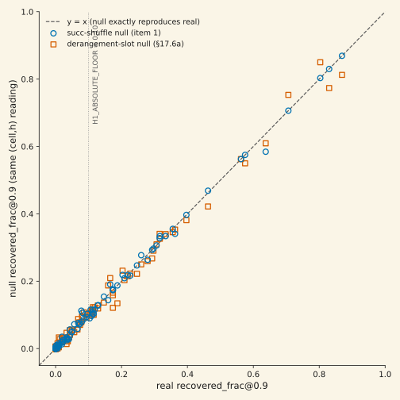
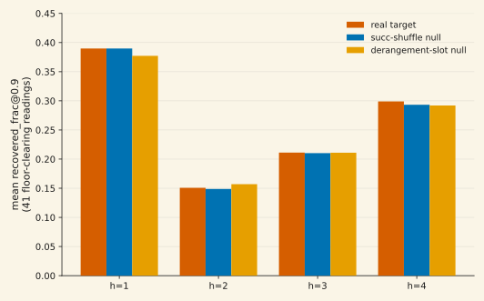

A gauntlet-required positive control on the production readout behind a published "80/80 nulls at every scale" result failed: a synthetic K=32 single-cycle written at the readout layer recovered 0/256 through the production scoring path on a real checkpoint, while the identical scoring code recovered 1.0000 when the state was manually transposed. Closed-form adjudication confirmed the cause exactly: the readout returned the kernel's raw key-major state layout instead of the value-major layout its own composition step assumes — the third independent victim of this project's own previously-documented transpose-bug class. A one-line fix, a kill-proofed regression test, and an independent audit later, the positive control passed cleanly. Re-running all 80 committed grid cells under the fixed instrument overturned the published null: 78/320 (cell, hop) readings turned nonzero, up to 0.87 recovery at one hop — the lane provisionally reopened. Two correspondence nulls, pre-registered before any GPU pass, then killed the reopened signal completely: a label-shuffle null and a positional derangement-slot null (the second added mid-validation after the first was found vacuous at one hop by construction) both reproduce the entire signal at 0/320 clears — the single strongest cell reads 0.8691 against its real target and 0.8125 against a target that is never correct by construction, 93.5% reproduction against the pre-registered 50% trivial-artifact bar. The mechanism: a collapsed prediction direction (cross-query convergence 0.9996) scored against a near-collinear value population (mean pairwise cosine 0.9648) clears any similarity threshold regardless of which target is graded. The lane re-closes, now validated by two independent instrument checks instead of zero, on a corrected claim: recovery is null-indistinguishable at every scale, corpus, and hop depth tested — not exactly zero, which was the old, now-retracted claim basis. Unpublished.
01What was being measured, and what "closed" meant
The reasoning-link program asks whether a fast-weight DeltaNet-family language model's recurrent state holds a legible successor structure — write a K-way relation implicitly while reading text, then recover its h-hop composition from the trained state at query time, the same way the model's own forward pass would need to if it were using the state for multi-step reasoning. The readout — extract the final state, apply it to a query key h times, score cosine similarity against the true successor at 0.9 — is the entire instrument the claim runs through.
Under that readout, an 80-cell grid across 3 arms, 2 corpora, up to K=64, and 4 hop depths read zero recovery everywhere: 0/320 (cell, hop) readings nonzero, at every scale tested. That result closed the lane and became the scorecard's standing claim — "80/80 geometric-readout nulls at all scales" — and the basis for a paper draft's negative-result framing.
A gauntlet review of that paper draft required one thing before the "instrument-verdict, not a refutation" framing could ship: a real-checkpoint, real-kernel positive control on the production readout itself — inject a synthetic signal with a known answer, and confirm the readout can find it. That control had never been run. It should have been the first thing built, not a late gate. Building it is what unravels everything below.
02Layer 1 — the positive control fails, and finds a transpose bug it didn't go looking for
The control: inject a synthetic K=32 orthonormal-key single cycle at the readout layer of a real, fully-trained checkpoint (a frozen-bias arm at step 20,000), then check whether the production scoring path recovers the known successor at h ∈ {1, 2, 3, 4}. It failed completely — 0/256 recovery at every hop, cosine reading ≈1×10⁻⁵, indistinguishable from noise — through the exact function chain the closed 80/80 result used.
Four diagnostics ruled out a script artifact before anything else was touched: the injected keys were orthonormal to 3.58×10⁻⁷, the hook injection had zero measured deviation from the intended state, the injected betas were healthy, and a negative control (grading against the wrong hop's target) read 0.0 at every hop as it should. The kernel's own raw state matched an independently-implemented reference recurrence at 0.17% relative Frobenius error — the numerics were fine. What wasn't fine was a single axis order.
A single-write, zero-accumulation closed-form check made the diagnosis exact rather than circumstantial: write one basis-vector key/value pair at a real kernel call, hand-compute the two candidate closed forms (the value-major layout the composition step assumes, and the kernel's own raw key-major layout), and compare all three against each other.
| comparison | rel-Frobenius | reading |
|---|---|---|
| reference transpose fn vs closed-form [V,K] (value-major) | 0.0 | reference is correct (sanity) |
| reference transpose fn vs closed-form [K,V] (kernel-native) | 1.4142 | = √2, the pure-transpose signature |
| production readout fn vs closed-form [V,K] | 1.4142 | production does not deliver the assumed layout |
| production readout fn vs closed-form [K,V] | 0.0 | production delivers the kernel's raw, untransposed layout |
| reference transpose fn vs production readout fn, transposed | 0.0 | the two are exact transposes of each other |
The production readout's state-extraction function returned the kernel's raw key-major state directly — no transpose — while its own composition step contracts a query key against what it assumes is the last axis being the key axis. With keys mutually orthonormal and values an independently-cycled permutation of the keys (deliberately not symmetric under transpose), applying composition to the untransposed state contracts the query against the kernel's value axis — structurally uncorrelated with any key, producing pure noise rather than systematic wrongness. This is byte-for-byte the same defect class this project has now found and fixed three separate times in three independently-implemented functions: once in the original state-design layout function, once in a different architecture's composer (documented at length in the piece on a 0-vs-1.0 readout contradiction and its resolution), and now here, in a third, never-shared implementation that inherited none of the prior fixes.
03The fix, and re-verification under the fixed instrument
The fix is one line: transpose the last two axes of the extracted state before it's used, mirroring the already-audited reference function's own transpose exactly — same two axes, same direction. A permanent regression guard was added: a hand-computed closed-form check on a tiny synthetic state tensor, no model, no kernel, no CUDA, that (a) asserts the post-fix function recovers a known written value exactly and (b) runs the pre-fix behavior inline as a kill-proof negative branch, confirming it fails the identical assertion the way the real positive control failed. This is a standing guard, not a one-time disclosure — it runs identically under a CPU stub or real hardware.
An independent audit (a fresh model instance with no access to this session's reasoning) reviewed the diff, hand-worked the index arithmetic independently, confirmed the fix has exactly one production call site, proved a downstream covariate (a condition-number diagnostic) is mathematically transpose-invariant rather than merely assumed unaffected, and confirmed no other part of the codebase constructs a state-shaped tensor through the same path. Verdict: pass, fix correct and minimally scoped.
The positive control was then re-run verbatim — same checkpoint, same seed, same construction — against the fixed function:
| hop | production recovered_frac | production cos_mean | deliberately-transposed arm | wrong-hop negative control |
|---|---|---|---|---|
| h=1 | 1.0000 | 1.0000 | 0.0000 | 0.0000 |
| h=2 | 1.0000 | 1.0000 | 0.0000 | 0.0000 |
| h=3 | 1.0000 | 1.0000 | 0.0000 | 0.0000 |
| h=4 | 1.0000 | 1.0000 | 0.0000 | 0.0000 |
The "deliberately-transposed" arm, which recovered perfectly before the fix, now reads exactly zero — the precise role-swap the diagnosis predicted, on the real kernel rather than by inspection alone. The instrument, not the underlying question, was the entire explanation for the original 0/256 positive-control failure.
04Layer 2 — the fixed lens shows apparent signal, and the published null does not survive
With the instrument fixed and independently audited, all 80 committed grid cells were re-run fresh — same archived checkpoints, same deterministic per-cell episode seeds (bit-identical episodes to the original harvest) — at a realized cost of 0.288 GPU-h. The published null did not survive:
| family | cells w/ ≥1 nonzero hop | nonzero (cell, hop) readings | h=1 recovered_frac mean / max |
|---|---|---|---|
| Leg A (60 cells) | 30/60 | 69/240 | 0.1255 / 0.8691 |
| Leg B (20 cells) | 8/20 | 9/80 | 0.0326 / 0.3340 |
| total (80 cells) | 38/80 | 78/320 | — |
The mean h=1 cosine similarity across all 80 cells shifted from the pre-fix band of roughly ±0.05 (centered on zero) to a mean of 0.40 with values up to 0.93 — a real shift in the readout's output distribution, not threshold flicker. Signal concentrated unevenly: strongest in one arm reading up to 0.87 at one hop on one corpus, with multi-hop composition (h ≥ 2) firing narrowly in a specific arm up to 0.64. The pre-registered confirmatory gates on this program's other premise checks — which were never touched by the transpose bug, since they read different intermediate values — still failed at every reading, so no confirmatory claim was licensed by this result alone. But the standing null claim was dead: recovery does not read zero under a working instrument. The lane reopened, provisionally, pending validation.
05Layer 3 — two correspondence nulls, pre-registered before running, kill the reopened signal
A signal that survives a positive control is not yet a correspondence claim. Before any further GPU pass, three follow-on questions were pre-registered with fixed hypotheses, metrics, and decision thresholds: does the signal survive a label-shuffle null, is the cell-level on/off pattern a stable checkpoint property or an episode-specific artifact, and does the strongest arm's multi-hop concentration replicate under exhaustive tabulation. The decisive one is the null.
The label-shuffle null. The existing null-labeling machinery — an independently-drawn permutation cycle, already implemented and unit-tested — was extended to grade every one of the 80 cells' predictions against a deliberately wrong target, in the same forward pass as the real grading (zero extra cost). The pre-registered decision rule required a shuffled reading to reproduce less than half the real reading and fail a null-relative statistical bound before counting as a genuine artifact. Result: 0/320 readings NULL-CLEARed. At the 41 readings clearing the absolute floor, mean real recovery was 0.3023 against mean null recovery of 0.3010 — indistinguishable.
That result surfaced something sharper on inspection: at one hop, real and null recovery were not merely close, they were exactly equal — 0.8691/0.8691, 0.5750/0.5750, 0.3969/0.3969 — in every strong cell. Tracing the target-construction code found why: at one hop, the graded target is computed with zero permutation steps applied, so it never consults the shuffled permutation at all. The label-shuffle null is vacuous by construction at one hop — real and null targets are identical for any permutation, always. (The null generator itself was confirmed healthy first: it agrees with the true permutation on only 4.1% of entries, matching chance, with zero identical rows — this was a design-level fact, not an implementation bug.) One consequence disclosed plainly: the pre-existing one-hop statistical gate this program has used since its original construction was, by this argument, structurally near-impossible to pass from the day it was built — the "real" one-hop reading is the null distribution's own mean by construction.
The derangement-slot control. This gap was the charter's own pre-anticipated fallback, so it was registered and run the same day: grade every prediction against a fresh per-row derangement of the K slots — a permutation with no fixed points, guaranteeing the graded target is never the correct one, at every hop including h=1, while holding the value population, episode, and forward pass fixed exactly. Its own kill-proof self-test ran in both directions before any real cell was scored: a perfect-correspondence synthetic fixture reads real=1.0/deranged=0.0 (the control would have caught a genuine signal), and a collapsed-geometry fixture reads real≈deranged (matching the failure mode under test). Result: 0/320 readings NULL-CLEARed, again — deranged targets reproduce the real signal at every hop, not only h ≥ 2.


The mechanism. A set of covariates this program had already instrumented explain the artifact directly, on the strongest cell and consistently across the grid: the model's own prediction direction converges across essentially every query to a single direction (cross-query cosine convergence 0.9996 — a signature of power-iteration degeneracy under state condition numbers ranging 1.8×10⁴–2.1×10⁶), and the population of value vectors it is scored against is itself near-collinear (mean pairwise cosine 0.9648). A constant prediction direction scored against a near-collinear population clears a 0.9 cosine threshold against almost any member of that population — real, shuffled, or deliberately deranged. recovered_frac was measuring the alignment of one collapsed direction with a population's common direction, not recall or composition of anything written.
The other two items, briefly. The cell-level on/off pattern (item 2) is a stable property of the trained checkpoint, not episode luck — 20 of 21 floor-clearing cells stayed on under a full independent episode resample. But per item 1, that stability is bimodality in a trivial geometric property (which checkpoints happen to develop a dominant, collapsed state direction), not in correspondence. The strongest arm's multi-hop concentration (item 3) replicated exactly as an arm-level fact under exhaustive tabulation — 20/72 of its multi-hop readings clear the floor against 1/36 and 0/72 for the other two arms — but is, per items 1 and the derangement control, a concentration of the same collapsed-geometry artifact in that arm's states, not of composition. That arm's states are independently known (from a separate program on this codebase) to be more prone to a related geometric instability; the connection is descriptively coherent but exploratory, not a registered finding here.
06The verdict, and what changes downstream
TRIVIAL-ARTIFACT — the lane re-closes, now doubly instrument-validated. Neither correspondence null distinguishes the real target from a shuffled or a never-correct one, anywhere in the 320-reading grid. The substantive conclusion the original 80/80 result reached — no evidence of state-to-target correspondence readable by this readout — is restored, but now on instrument grounds that survived two independent adversarial checks instead of resting on an uncontrolled readout that turned out to be broken.
Two claim-shape corrections bind every downstream reference to this program. First: "recovery reads zero at every scale" is dead. Under a working instrument, recovery does not read zero — the correct claim is recovery is null-indistinguishable at every scale, corpus, and hop depth tested, which is a different and more defensible statement. Second: the program's one-hop statistical gate condition was structurally near-unpassable from the day it was built, for reasons unrelated to the transpose bug; any future one-hop gate in this codebase must use the derangement-slot control, not the label-shuffle null. Neither correction changes the practical conclusion — the reasoning-link lane stays closed — but both change what it is honest to say about why.
07Caveats — read before citing
- This is a methodology finding about one readout, not a claim about the underlying models. It says the geometric-readout instrument in this program cannot distinguish correspondence from a trivial collapsed-direction artifact at any tested scale. It does not claim reasoning-linked structure is absent from these models under every possible readout.
- The independent audit covered the validation's decision machinery, not the derangement script specifically. The audit ran against the label-shuffle null's implementation with adversarial fixtures and passed; the derangement control was built afterward, reusing the same audited machinery plus a separately pre-existing, previously-audited derangement generator, and carries its own two-direction kill-proof rather than a second full audit round.
- The per_token arm's write-geometry connection (§05) is explicitly exploratory. It is offered as a plausible mechanism link to a separate, independently-run program on this codebase, not as a registered or tested claim of this validation.
- Both nulls' teeth were verified, not assumed. The label-shuffle null's own healthiness (4.1% agreement with the true permutation, chance-level, zero identical rows) and the derangement control's kill-proof selftest (perfect-correspondence fixture reads real=1.0/deranged=0.0) both ran before either null's negative result was trusted.
- Scale and scope. A 14M-parameter frozen-bias DeltaNet-family family, K ∈ {20, 32, 64}, two corpora, 4 hop depths, up to 3 seeds per cell. The reasoning-null-moss paper draft and the project scorecard route on this verdict by separate, later dispatches — nothing about this page pre-empts either.
08Reproducibility
Everything is recomputable from committed raws. Layer 1/2 (positive control, fix, audit, and the 80-cell re-metric): experiment-runs/2026-07-11_reasoning_link_remetric/ (analytic adjudication pre/post fix, fix-and-audit record, positive-control re-run, and all 80 re-metric cell JSONs + aggregate summary; realized cost ≈0.30 GPU-h). Layer 3 (both correspondence nulls): experiment-runs/2026-07-11_reasoning_link_validation/ (160 per-cell JSONs across the two null sweeps + analysis summaries + the derangement control's kill-proof selftest; realized cost ≈0.22 GPU-h). Total instrument-verification cost across all three layers: ≈0.52 GPU-h, against forward-pass-only budgets pre-authorized before each stage. Figure script: assets/plots/generate_reasoning_link_saga.py, which reads the archived JSONs directly, md5-verifies its primary source file, and asserts its own computed summary statistics against the values reported above before writing any figure.
References
- Yang, S., Kautz, J., & Hatamizadeh, A. (2024). Gated Delta Networks: Improving Mamba2 with Delta Rule. arXiv:2412.06464